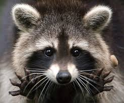

Єноти
Єнот-полоскун

Ця тваринка відноситься до невеликих хижаків, які в природних умовах зазвичай зустрічаються на територіях Південної і Північної Америки. Довжина тіла 45-60 см, хвоста - 20-25 см. Вага 5-9 кг. Голова широка з короткою загостреною мордою і округлими вухами.На мордочці контрастна чорно-біла «гангстерська» маска.
Хутро - густе, коричнево-сірого кольору. На всіх лапках є яскраво виражені пальці, а сліди від них часто нагадують відбитки маленьких людських долонь.
Тривалість життя 2-3 роки.
Період вагітності полоскунів триває 63-65 днів. У дикому вигляді в Україні не зустрічається. Однак відомі випадки, коли бачили групи по 5-10 особин за 10-30 км від кордонів України з Білоруссю, де вони зимували в дуплах вікових дерев. Імовірно, що ці єноти живуть і на теренах України, в північних районах Чернігівської, Київської та Житомирської областей. Барбадоський єнот
 Це дуже рідкісний острівний підвид єнота-полоскуна (Procyon lotor), з 1964 року вважається повністю зниклим. Жив на острові Барбадос, розташованому в Карибському морі.
Зовнішній вигляд
За будь-якими фізичними і біоекологічними параметрами (зовнішньому вигляду, поведінки та екології) барбадоський єнот, практично не відрізнявся від мешканця неподалік, на американському материку, єнота-полоскуна Procyon lotor.
Серед фахівців-науковців досі триває обговорення питання: чи є барбадоський єнот, подібно до інших чотирьох острівним єнотам, фактично окремим самостійним видом, або це всього лише підвид Procyon lotor, або тільки екологічний ізолят Procyon lotor. Деякі дослідники вважають, що можливо на острів єнот був завезений в недалекому минулому з материка людиною.
Це дуже рідкісний острівний підвид єнота-полоскуна (Procyon lotor), з 1964 року вважається повністю зниклим. Жив на острові Барбадос, розташованому в Карибському морі.
Зовнішній вигляд
За будь-якими фізичними і біоекологічними параметрами (зовнішньому вигляду, поведінки та екології) барбадоський єнот, практично не відрізнявся від мешканця неподалік, на американському материку, єнота-полоскуна Procyon lotor.
Серед фахівців-науковців досі триває обговорення питання: чи є барбадоський єнот, подібно до інших чотирьох острівним єнотам, фактично окремим самостійним видом, або це всього лише підвид Procyon lotor, або тільки екологічний ізолят Procyon lotor. Деякі дослідники вважають, що можливо на острів єнот був завезений в недалекому минулому з материка людиною.Продовження на іншій сторінці.